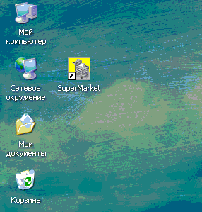
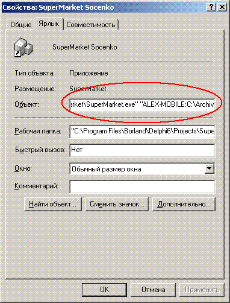
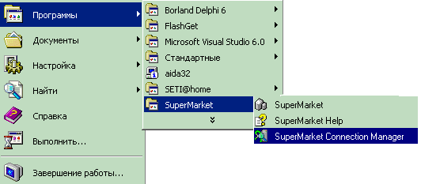
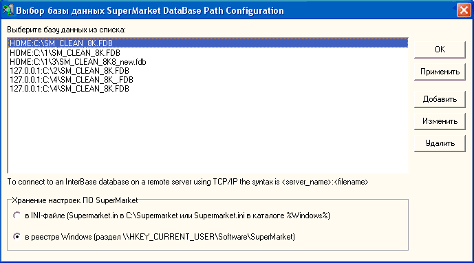
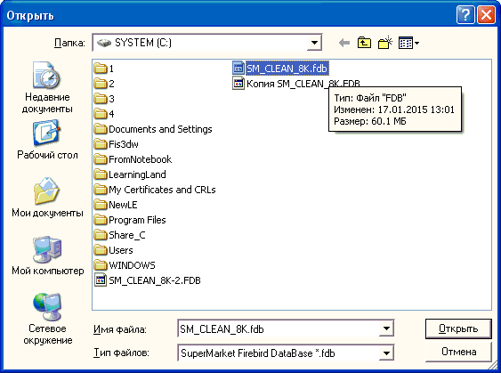

Для установки программы запустите файл Setup.exe из дистрибутива программы (на компакт-диске находится в папке Setup) и следуйте инструкциям инсталлятора. По умолчанию программа устанавливается в каталог C:\SuperMarket\... рекомендуем не изменять этот путь.
На рабочем столе появляется значок запуска программы, а в меню Пуск\Программы создается папка SuperMarket, в которой кроме значка запуска основной программы появляется значок вызова справки SuperMarket Help и значок SuperMarket Connection Manager.

Подсказка: В программе путь к
базе данных можно указать непосредственно в ярлыке на рабочем столе. Для этого
создайте ярлык для SuperMarket.exe, а затем щелкните на ярлыке правой
кнопкой мыши и в появившемся контекстном меню выберите "Свойства", в строке
"Объект" после пути к программе через пробел напишите путь к базе данных. Если
установка сервера Firebird SQL Server проводилась по нашим рекомендациям, то
перед строкой пути через двоеточие укажите имя компьютера или его
IP-адрес на котором находится база данных. Например:
"C:\SuperMarket\SuperMarket.exe" "SERVER:D:\BASE\SM_CLEAN_8K.fdb"

Кроме того Вы можете создавать на рабочем столе более одного ярлыка к программе SuperMarket и в каждом из них прописать пути к разным базам данных.
Ниже приводится описание того как указать путь к базе данных при помощи утилиты SuperMarket Connection Manager традиционным способом.

При помощи значка SuperMarket Connection Manager запускается программа-указатель текущего пути к активной базе данных программы, причем в первый раз после установки программы необходимо назначить активную базу данных именно с помощью данного дополнительного приложения.

Для добавления пути к базе данных нажмите кнопку Добавить, и в появившемся окне выберите путь к базе данных или, т.к. по умолчанию пустые базы данных, расположенные в корне диска C, помечены как скрытые файлы и их не видно, то можно ввести имена файлов вручную и нажать Открыть, а затем нажав кнопку Изменить, дописать впереди адреса имя сервера. Если база данных находится на локальном компьютере, то при изменении нужно через двоеточие указать локальное имя компьютера, если на удаленном - указать имя удаленной машины.

Пример: необходимая нам база данных расположена на другом компьютере локальной сети с именем SERVER1, в корне его диска C:\, а название файла базы данных SM_CLEAN_8K.fDB, таким образом наш адрес будет выглядеть так: SERVER1:C:\SM_CLEAN_8K.fDB (также можно вместо имени компьютера использовать IP-адрес).
Для того, чтобы запомнить какая база активна, выделите ее в списке и нажмите кнопку ОК или Применить, причем кнопка ОК кроме сохранения адреса сразу закроет программу выбора пути к базе данных.
В дальнейшем, при необходимости переключения между базами данных, можно пользоваться как этим апплетом, так и встроенной в основной модуль программы возможностью указания пути к базе данных.
Также указатель путей позволяет настроить хранение настроек ПО SuperMarket в ini-файле или в реестре Windows (в таком случае для разных пользователей операционной системы будут разные настройки).
Запуск основной программы производим при помощи значка SuperMarket расположенного на Рабочем столе. При первом запуске после установки программного обеспечения появится диалоговое окно с кодом активации программы. Для получения ответного кода-ключа обратитесь к вашему продавцу программного обеспечения.